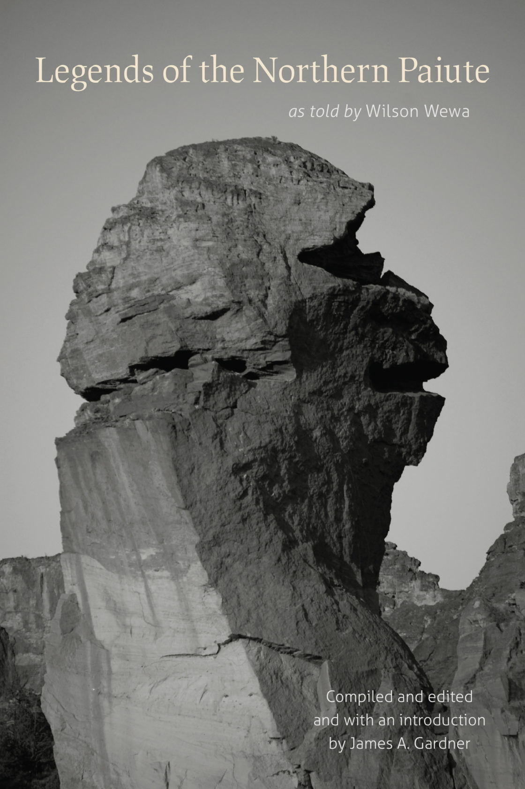

This anthology features twenty-one Northern Paiute stories told by Warm Springs Paiute spiritual leader and oral historian Wilson Wewa. The stories were recorded and transcribed by Wewa and editor James A Gardner in order to respect and preserve the conventions of traditional Paiute oral storytelling. The legends themselves span creation myths, hero tales, stories of floods, epic battles, and trickster narratives, offering readers a glimpse of Northern Paiute cultural traditions while simultaneously highlighting the importance of oral storytelling as a means of preserving knowledge and history.
The first thing I will say is that if you are someone like me who typically skips prefaces, acknowledgements, or other introductions at the start of books, don’t do that with this collection. Wewa and Gardner have done such an excellent job putting the stories together that I think getting some context for the process that they used to approach the project was incredibly useful to have before diving into the legends themselves. Wewa specifically says that “Some forty years of traveling for recreation, for sightseeing, and for reconnecting with long-forgotten relatives and friends have helped me gather the legends I am now trying to communicate” (xliii). I think that is apparent in the stories, as each one carries with it its own distinct character and level of care. Understanding where and how Wewa initially learned these legends gives readers a clearer sense of the conventions and purpose of the Paiute oral tradition.
What this collection does especially well is preserve the feeling of oral storytelling. Reading transcribed Indigenous stories can sometimes distance readers from an important aspect of the medium– the performance of the storyteller themself. However, Wewa’s personality immediately emerges through recurring openings like “A looong, long time ago…,” giving the book a conversational tone that distinguishes it from many other anthologies of edited folklore.
The stories will sometimes repeat information, circle back to earlier threads, or insert brief asides that feel directed to a listening audience. These moments don't simply function as stylistic quirks; I’d argue they deliberately create the impression of a story actively being performed and told rather than a fixed text being recited. One of my favorite instances of this happens in Legend 13, “How the Stars Got Their Twinkle and Why Coyote Howls to the Sky,” after Coyote, a recurring figure throughout Paiute stories, climbs up a rope into the clouds, he finds a woman already there. “She was standing there with a dress on. It was decorated with abalone shells on the fringes. And every time she would move the firelight would hit those shells, and they would sparkle. Pretty soon another lady joined her. And as it was getting darker, still another lady joined her.” The rhythm and progression of the storytelling animates the legend in a way that feels especially unique and engaging. As a result of this attention to detail in the transcription, the anthology preserves not only Northern Paiute stories but also traces of the storytelling practices through which those stories have been passed down.
If our guide is meant to demonstrate the breadth of Oregon's literary traditions, Legends of the Northern Paiute is an essential inclusion. Wewa's collection reminds readers that the literary history of this region extends far before the mythology of covered wagons and pioneers. The legends in this work emerge from a much longer tradition of storytelling connected to the land and communities that predate Oregon. Through Wewa's telling, the anthology offers readers not simply a record of that tradition, but an opportunity to encounter its continued vitality.
“The Paiute people have never, ever given up our land and its resources in the Great Basin. We have been forced to change, but they can never take the Indian out of our heart. And as long as we keep alive the Indian within ourselves, we’ll always be a part of that Paiute heritage. And part of being a Northern Paiute, a little part of it, has now been told and written in the legends and stories of this book.” (Wewa xliv)
Wilson Wewa is an oral historian and spiritual leader of the Warm Springs Paiute in northern central Oregon. Wewa is a descendant of Paiute Chief Paulina and Chief Weahwewa and attributes much of his love and knowledge around storytelling to his grandmother, Maggie, as well as the many Paiute and Shoshone elders who shared stories with him growing up. He was first introduced to Paiute stories as a boy while attending a root camp in southeastern Oregon and has carried that passion throughout his life, becoming a recognized storyteller among his tribe. As a result, he has extensive historical and cultural knowledge of central and southeastern Oregon and is a frequent speaker and presenter at public events, serving as an active proponent of land and cultural preservation.
Linda Meanus, My Name is Lamoosh (2023)
- Warm Springs elder memoir focused on cultural memory and resilience.
David G. Lewis, Tribal Histories of the Willamette Valley (2023)
- Oregon tribal histories told through Indigenous research and memory.
